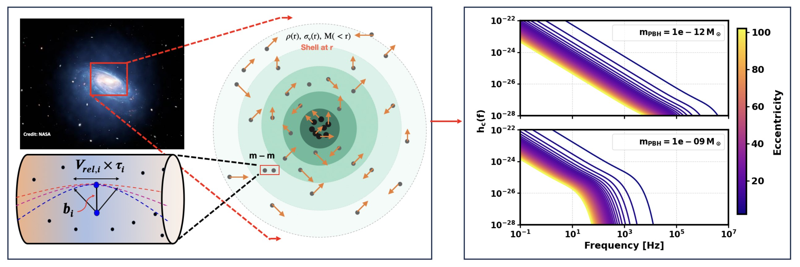
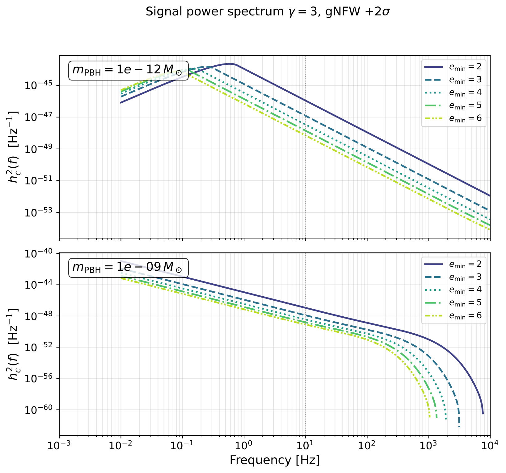
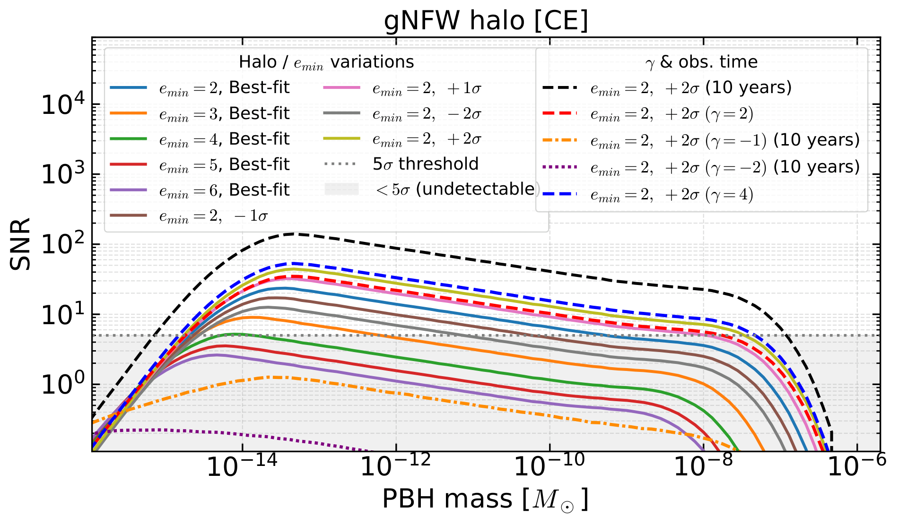
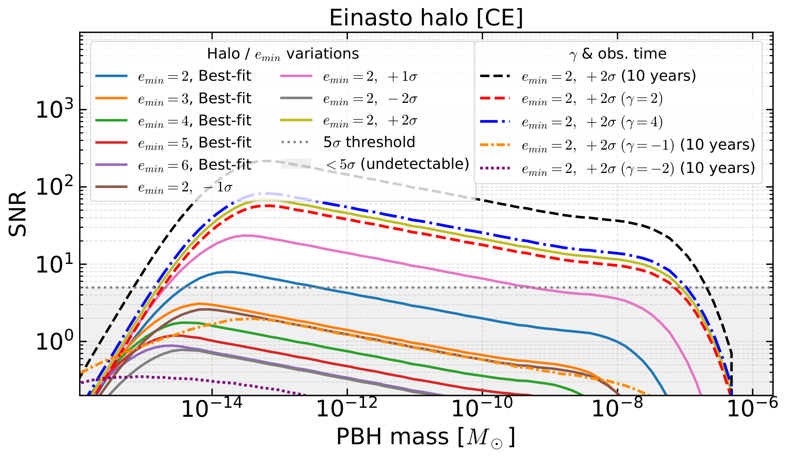
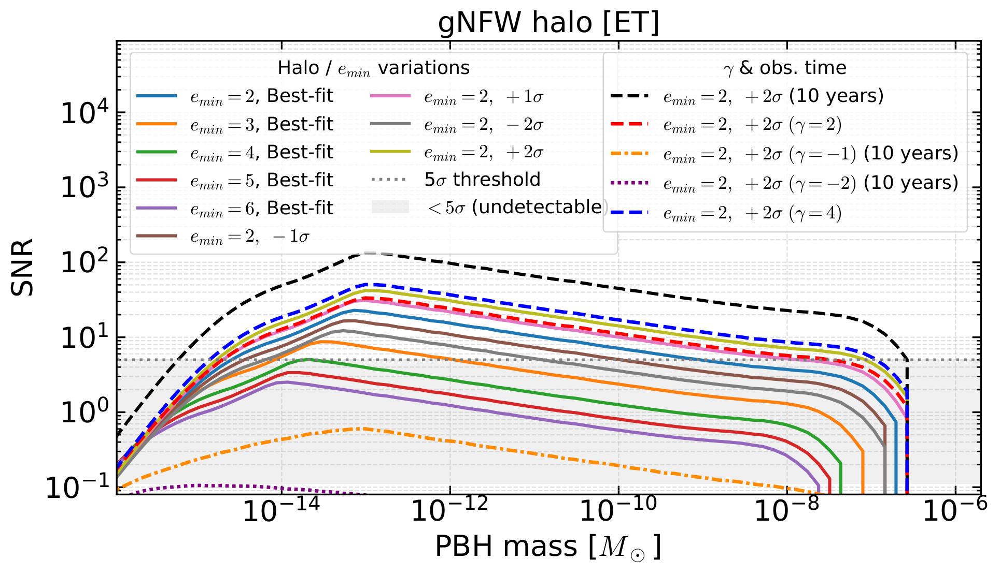
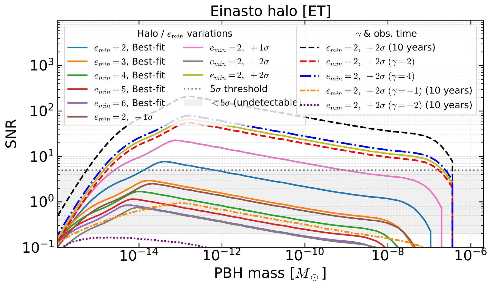
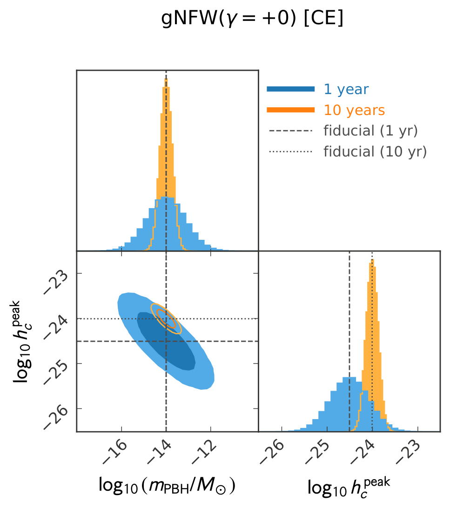
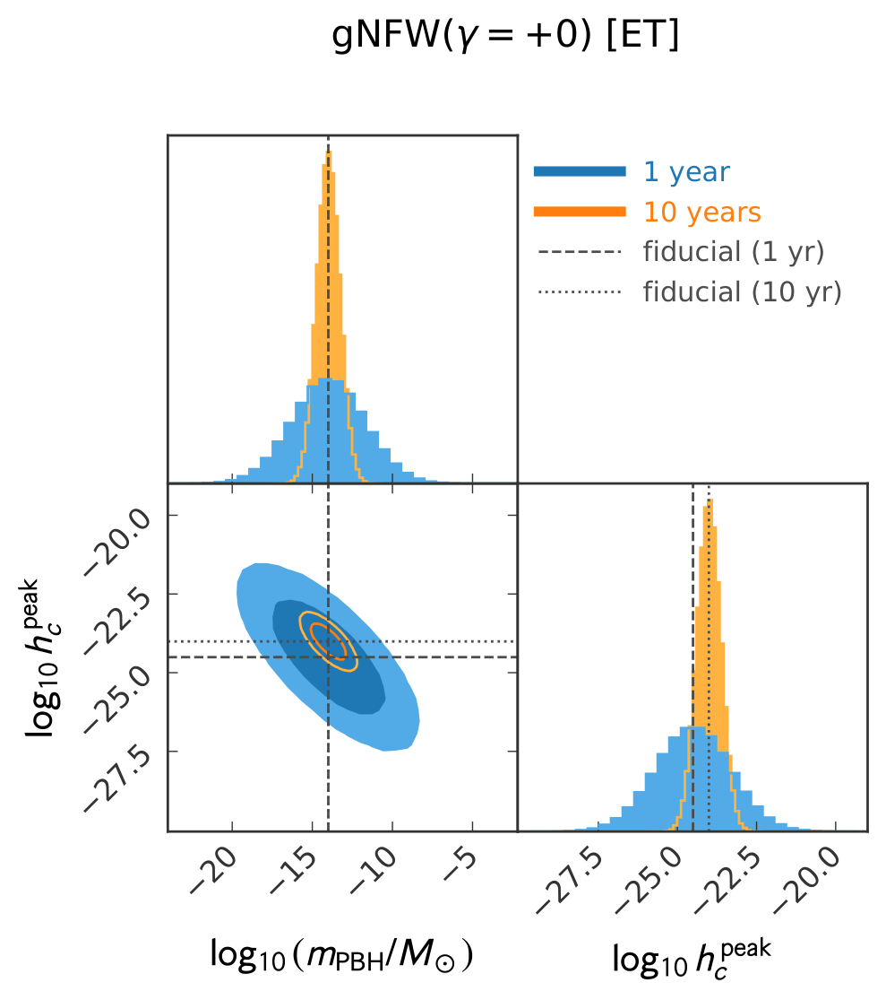
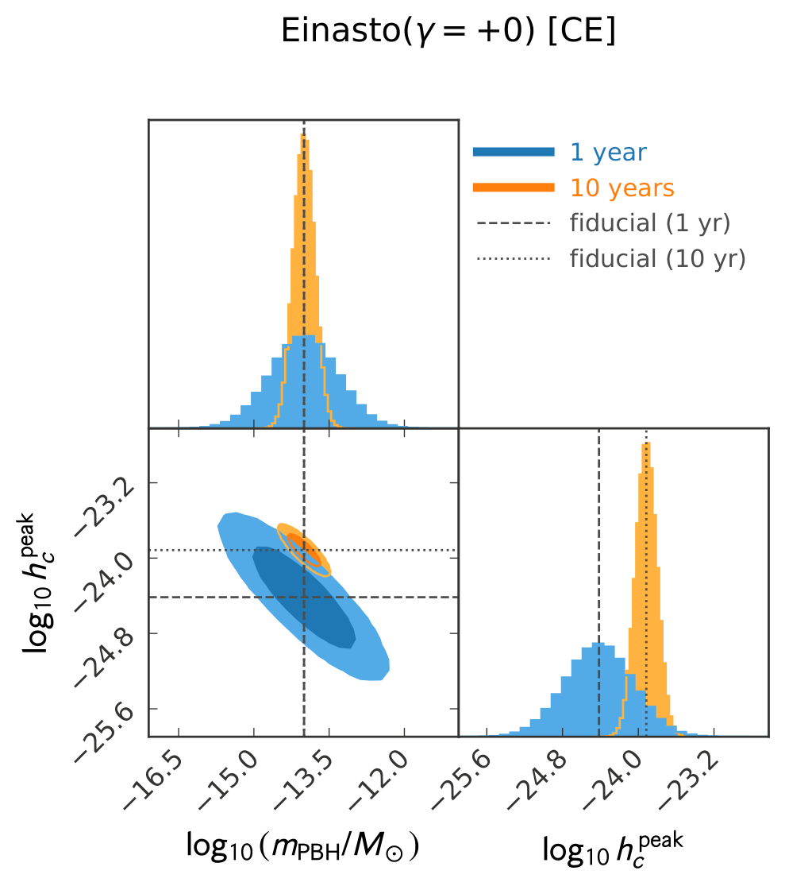

01 — The questionWhat is dark matter made of?
Dark matter makes up about 27% of the energy budget of the Universe, yet after decades of searching we still do not know what it is. Searches for weakly interacting particles keep coming back empty, which has renewed interest in a very different candidate: primordial black holes (PBHs). These black holes would have formed from large density fluctuations in the very early Universe, long before any star, and could have almost any mass, from far below a planet to many times the Sun. Because they interact only through gravity, a large enough population of them could make up a sizeable fraction of the dark matter, or even all of it.
Microlensing surveys, the cosmic microwave background and the survival of wide binary stars already rule out PBHs as all of the dark matter over many mass ranges. But a window remains open between roughly asteroid and sub-lunar masses, where these objects are too small to lens stars and too dim to see in any other way. If PBHs exist there, they would fill the halo of our own Galaxy, and they would occasionally pass very close to one another.
Our question was simple: if dark matter is made of such black holes, how bright is the centre of the Milky Way in gravitational waves, and could upcoming detectors see it?
02 — The physical pictureGravitational bremsstrahlung, shell by shell
PBHs in the halo move fast and are mostly unbound, so when two of them come close they do not merge. They swing past each other on a hyperbolic orbit and fly apart again. Almost all of the gravitational radiation is emitted in the short moment around closest approach. This is gravitational bremsstrahlung: "braking radiation", the gravitational cousin of the X-rays emitted when an electron is deflected by a nucleus. A single fly-by is extremely weak, but the halo contains an enormous number of them, happening all the time.
To add them up realistically, we divided the dark matter halo of the Milky Way into thin concentric shells, from the inner parsec out to 2 kiloparsecs from the Galactic Centre. Each shell has its own dark matter density, its own typical velocity and its own enclosed mass. In every shell we computed how often PBHs meet, how close they get, and what spectrum of gravitational waves each encounter emits, and then summed all shells to get the total signal. We did this for two widely used descriptions of the halo: the generalized Navarro–Frenk–White (gNFW) profile, whose inner slope can vary, and the Einasto profile, which fits cosmological simulations well.

03 — From one fly-by to a signalMany faint bursts make one broadband signal
Two things decide what a single fly-by sounds like: how close the black holes get and how long the encounter lasts. Both depend on the PBH mass, their relative speed and the eccentricity of the orbit. A near-parabolic fly-by (eccentricity close to 1) brings the black holes very close together for a very short time, producing a strong, high-frequency burst. A wide, high-eccentricity fly-by is gentle and slow, giving a weak, low-frequency burst.
Heavier PBHs have longer encounters, so their bursts come out at lower frequencies. Lighter PBHs give shorter, higher-frequency bursts that fall right into the band of ground-based detectors. Lighter black holes are also far more numerous, so they meet much more often, even though each meeting radiates less energy.
The total signal is the sum of all these bursts. It rises with frequency as closer, stronger encounters take over, reaches a peak, and then falls off because no encounter can be tighter than the smallest allowed eccentricity. The detector then sees this spectrum against its own noise, and the signal-to-noise ratio grows with the square root of observing time.

04 — How bright is the Galaxy?The Galactic Centre as a gravitational-wave source
We computed the signal-to-noise ratio (SNR) that Cosmic Explorer (CE) and the Einstein Telescope (ET) would collect in one year, as a function of PBH mass, assuming PBHs are all of the dark matter. For both halo profiles the answer is encouraging: with a bottom-heavy distribution of eccentricities, the SNR can exceed 5 in a single year over a broad range of masses, from about 10−14 to 10−8 solar masses. In other words, the centre of our Galaxy could appear as a bright gravitational-wave source.




What shapes these curves
A sweet spot in mass
Very light PBHs radiate above the detector band, so the SNR starts low. As the mass grows, the bursts move into band and get stronger. Past about 10−14 M☉, encounters become rarer faster than each one gets louder, so the SNR slowly falls again.
Cosmic Explorer sees more
At the most detectable mass, CE reaches about three times the SNR of ET, because the signal sits in CE's most sensitive frequency range. For heavier PBHs more of the signal moves below 10 Hz, where ET is strong, but CE's broad sensitivity up to about 1 kHz still keeps it ahead by roughly a factor of two.
How close the fly-bys get
Near-parabolic encounters radiate most efficiently, so allowing them (a small emin) raises the SNR at every mass. The shape of the eccentricity distribution also decides which masses are detectable, so the mass window depends on this modelling choice.
The shape of the halo
How steeply dark matter piles up towards the Galactic Centre changes the encounter rate. Uncertainties in the inner halo change the SNR by a factor of 2–3, and a cuspy gNFW centre gives a stronger signal than the flatter Einasto one.
05 — Measuring the massFrom a detection to a measurement
A detection would do more than prove that the signal exists. Because the shape and height of the spectrum depend on the PBH mass, the signal itself tells us how heavy the black holes are. We ran a Fisher-matrix forecast for the peak signal amplitude and the PBH mass, for a fiducial mass of 10−14 M☉. With one year of data the mass is already constrained, and with ten years the measurement becomes much sharper, because the signal keeps building up while the noise averages down.



06 — Why it mattersA new, local window on dark matter
This opens a genuinely new way to look for sub-lunar to asteroid-mass black holes inside our own Galaxy, a mass range that cosmic microwave background distortions, microlensing and large-scale structure struggle to reach. Those probes look across cosmological distances; this signal comes from within about 2 kiloparsecs of the Galactic Centre. Because it is concentrated in one direction on the sky, it is naturally anisotropic, unlike most gravitational-wave backgrounds.
That opens several practical routes. Searches pointed at the Galactic Centre could separate this signal from instrumental noise and from other astrophysical backgrounds. Burst templates for hyperbolic encounters could be added to transient-search pipelines. And whether we detect the signal or only set an upper limit, the result will constrain how much of the dark matter can be in PBHs, how dark matter is distributed in the inner Galaxy, and how compact objects behave in the densest regions of galaxies.